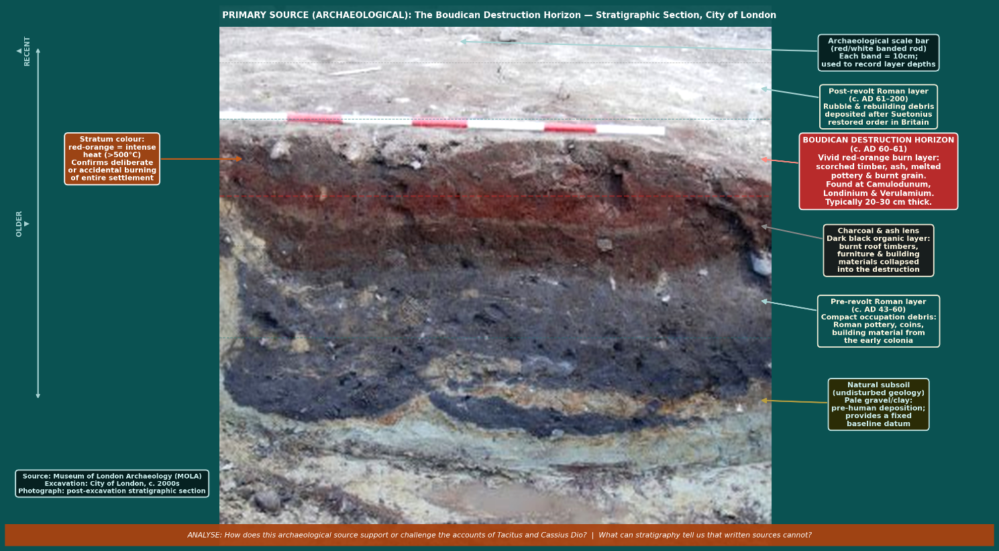
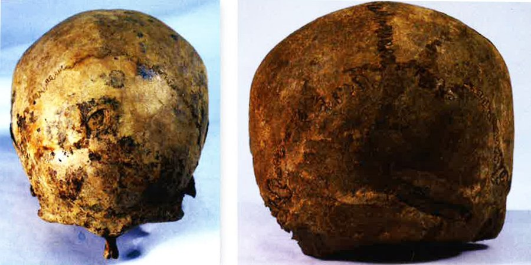

Lesson 13
What does the soil itself tell us about Boudicca’s revolt — and how does physical evidence corroborate, challenge, and extend the written record?
~35 min
AH11-5: Examines the significance of historical features, people, places, events and developments of the ancient world
AH11-6: Analyses and interprets different types of sources for evidence to support an historical account or argument
AH11-8: Plans and conducts historical investigations and presents reasoned conclusions, using relevant evidence from a range of sources
AH11-9: Communicates historical understanding, using historical knowledge, concepts and terms, in appropriate and well-structured forms
AH11-10: Discusses contemporary methods and issues involved in the investigation of ancient history
To understand how archaeological evidence corroborates, challenges, and extends our understanding of the Boudiccan revolt beyond what is available in the written sources.
0 of 4 criteria met
By the end of this lesson, I can:
Teacher — Sharing LISC
Display the learning intention and success criteria on the board. Read them aloud and ask students to identify the key verbs (describe, explain, analyse, evaluate). This lesson is methodological — it is about how we know rather than what happened. Check understanding: “Can someone explain the difference between archaeological evidence and written evidence in their own words?” (cold call).
This lesson shifts our focus from written sources to physical evidence. Think back to what you’ve learned about the destruction of the three towns and the revolt’s aftermath.
How confident are you about the difference between written and archaeological evidence?
Teacher — Activating Prior Knowledge
Use cold call to ask 3–4 students for their answers. Correct answers: (1) Camulodunum, Londinium, Verulamium; (2) Any valid limitation (Roman bias, writing decades later, no Celtic perspective, etc.); (3) Any valid advantage (not shaped by authorial intent, direct physical trace, etc.).
CFU strategy: Retrieval gesture vote — “True or false: Archaeological evidence can tell us the names of specific people involved in the revolt. Thumbs up for true, down for false.” (Answer: false — archaeology reveals material culture, not names or motivations.) If fewer than 80% correct, briefly distinguish the two types of evidence before proceeding.
Teacher — Modelling (‘I Do’)
Begin with an analogy: “Imagine a house fire. The fire brigade report tells you who called it in, what time they arrived, and what they think caused it. But the burnt remains of the house tell you something different — where the fire started, how hot it was, what was inside. The report has a perspective; the ashes are just evidence. That’s the difference between written sources and archaeology.”
Read the first paragraph aloud, then pause to check understanding.
The written record of the Boudiccan revolt is limited: two Roman historians, writing decades after the events, from a Roman perspective, drawing on sources we no longer have. Archaeological evidence offers something qualitatively different — the direct, physical traces left by the events themselves, unmediated by any author’s rhetorical purposes. When a layer of burnt debris in the soil of the City of London dates to the mid-first century AD, that soil is not trying to persuade anyone of anything. It is evidence.
The convergence of archaeological and written evidence is one of the great strengths of the Boudiccan historical record. Unlike many events in ancient history where archaeology and texts refer to entirely different dimensions of the past, the Boudiccan revolt has left traces in the soil that directly correspond to specific events described by Tacitus. This is historically unusual and intellectually significant.
However, archaeology also has limitations. Physical evidence can tell us where and how things were destroyed; it cannot always tell us who destroyed them, or why, or with what feelings. The interpretation of archaeological evidence always requires inference — moving from physical facts to historical conclusions — and those inferences can be wrong.
Teacher — CFU
Use cold call. If they answer incorrectly, return to the fire analogy and ask: “What can the ashes tell us that the fire brigade report cannot?”
What is the main advantage of archaeological evidence over written sources?
Teacher — Guided Reading (‘We Do’)
Display the stratigraphy image below. Before students read, ask: “What can you see in this photograph?” (cold call 2–3 students). Then read the first paragraph aloud together. Pause after each town to check understanding: “What was found at Camulodunum? What about Londinium?”

The most dramatic and consistently identified piece of archaeological evidence for the revolt is the “Boudiccan destruction horizon” — a distinctive layer of burnt debris found beneath the modern ground surface at Camulodunum, Londinium, and Verulamium.
At Camulodunum, this layer has been identified in multiple excavations across the town centre, containing burnt daub, charred timbers, melted glass, scorched pottery, and burnt grain. The grain is particularly significant: it suggests the destruction occurred during or after harvest, consistent with a revolt in AD 60/61. Beneath the Norman castle, the original podium of the Temple of Claudius survives, surrounded by destruction debris.
At Londinium, the destruction horizon is typically found between 1 and 2 metres below modern street level, reflecting the depth of Roman and later medieval deposits above it. It is a reddish-orange layer approximately 30 centimetres thick, composed of burnt clay, charcoal, smashed pottery, and melted structural materials. It has been found at numerous sites across the City of London, including Gracechurch Street, Fenchurch Street, the Bloomberg site on Walbrook, and under Leadenhall Market. Its consistent depth and composition across widely separated sites confirms a single rapid destruction event.
At Verulamium, similar burnt layers have been found, though the town’s later reconstruction means the evidence is more disturbed. The key excavations at Verulamium, conducted by Mortimer Wheeler in the 1930s and Sheppard Frere in the 1950s–70s, established the sequence of pre-Boudiccan, Boudiccan destruction, and post-Boudiccan rebuilding clearly.
How do archaeologists know the destruction at Londinium was a single event rather than gradual damage?
Teacher — Scaffolding
This section provides context about the Iceni as a wealthy, sophisticated culture. Use think-pair-share: “After reading, discuss with your partner: How does the Snettisham Treasure change your understanding of the Iceni? Were they the ‘barbarians’ the Romans described?” (90 seconds). Cold call 2–3 pairs.
Beyond the destruction layers, archaeological evidence of the Iceni themselves provides important context for understanding Boudicca’s revolt. The Iceni territory (roughly modern Norfolk and Suffolk) is rich in Iron Age material reflecting their status as one of the wealthiest tribes in pre-conquest Britain.
The most characteristic Iceni artefacts are their distinctive coins. The Iceni were prolific coin producers, minting their own silver and gold coins with characteristic designs including patterns derived from a horse, a sun symbol, and abstract geometric forms. These coins have been found in large numbers across East Anglia and provide a material record of Iceni cultural and economic activity up to the time of the revolt.
La Tène style metalwork — including torcs (twisted neck rings of gold or bronze), chariot fittings, and weapons — found in East Anglia reflects the wider Celtic artistic tradition shared by the Iceni with other British tribes. The Snettisham Treasure, discovered in Norfolk in 1948 and subsequently expanded by later finds, is the most spectacular collection of Iron Age gold torcs ever found in Britain, and while it predates the revolt by about a century, it provides vivid evidence of the wealth and craftsmanship of the Iceni society from which Boudicca emerged.
Case Study: The Snettisham Treasure
The Snettisham Treasure (discovered 1948–1990, Norfolk) consists of over 170 gold and electrum torcs, representing an enormous concentration of wealth buried during the Late Iron Age. While not directly connected to the revolt, it illustrates the extraordinary material wealth of the Iceni nobility — the very wealth that Roman financial exploitation targeted. The treasure is held at the British Museum.
Teacher — CFU
Gesture voting: “Hold up A, B, C, or D with your fingers. On three — one, two, three — show me.”
Why is the Snettisham Treasure historically significant for understanding Boudicca’s revolt?
Teacher — Modelling: A Lesson in Method
This is the most important methodological section of the unit. Frame it carefully: “This case study is not really about skulls. It’s about how historians and archaeologists think. It’s about what happens when a dramatic discovery is matched to a dramatic story — and then modern science shows the match was wrong.”
Walk through each section step by step. After each, pause and check understanding with cold call before proceeding.

The Walbrook skulls are a collection of approximately one hundred human skulls discovered in the Roman deposits of the Walbrook stream in the City of London. They represent one of the most significant and debated finds in the archaeology of Roman Britain — not because they confirm the written record, but because modern analysis has challenged the dramatic story that was initially built around them.
Cross-Reference
This case study connects directly to Lesson 7 (The Campaign of Destruction). Having studied the burnt destruction layer at Londinium, you can now evaluate a second category of physical evidence from the same city — and ask why the two types of evidence point to very different conclusions.
For many decades after their discovery, the Walbrook skulls were linked to Boudicca’s sack of Londinium in AD 60/61. Under this interpretation, the skulls were the remains of Roman inhabitants who had been decapitated by rebel forces, with their severed heads cast into the stream — perhaps as a ritual or symbolic act of victory.
This reading seemed to fit neatly with the ancient literary accounts. Cassius Dio (Roman History LXII.7) described what he called “bestial atrocities” committed against the population of Londinium, including acts of extreme violence against women. The skulls appeared to offer physical confirmation of Dio’s graphic narrative.
Key Observation
Notice how the initial interpretation was shaped by the written sources — scholars already knew what Tacitus and Dio said happened at Londinium, and the skulls were interpreted to fit that existing narrative. This is a pattern that archaeologists now actively work to resist.
Modern forensic and archaeological analysis has largely undermined the Boudiccan revolt theory. Several independent lines of evidence point away from the AD 60/61 connection:
| Finding | Significance |
|---|---|
| Lack of perimortem trauma | The skulls generally show no signs of injuries occurring at the time of death. If the individuals had been killed in a violent massacre or decapitation, we would expect to see cut marks on bone. Their absence is significant. |
| Demographics of the remains | Most skulls belong to young men — the demographic most likely to have fled Londinium before Boudicca’s army arrived. If the victims were those who could not escape, we would expect a different demographic profile. |
| Missing jawbones | The absence of jawbones indicates that the heads decomposed in an open environment for several months before entering the water — the jawbone naturally detaches as soft tissue breaks down. This is inconsistent with a single violent event followed by rapid deposition. |
| Radiocarbon dating | Scientific dating has placed the skulls across a broad range spanning the 1st to 3rd centuries AD. A connection to a single event in AD 60/61 cannot be sustained when the remains were deposited over approximately 200 years. |
Because the Boudiccan connection is now considered unlikely by most archaeologists, scholars have proposed several alternative explanations:
| Theory | Explanation |
|---|---|
| Ritual deposition | The skulls may represent a long-standing Celtic or Romano-British religious practice of offering human heads to water spirits. Head cults were documented across the ancient Celtic world. |
| Periodic urban violence | The remains could be victims of scattered incidents of urban violence, judicial execution, or inter-personal conflict spread across two centuries of Roman occupation. |
| Natural accumulation | The heads may have been washed down from nearby cemeteries through natural erosion, flooding, or the gradual disturbance of burial sites by building activity in Roman Londinium. |
Methodology Note
The ‘evocative potential’ problem: A dramatic physical discovery — a collection of human skulls in a Roman stream — immediately invites a dramatic story. Without the written accounts of Tacitus and Cassius Dio, these skulls might never have been linked to Boudicca at all. This demonstrates how texts can shape — and sometimes distort — the interpretation of the archaeological record.
Principle 1 — Evidence must be evaluated independently. Archaeologists now resist the temptation to fit physical evidence to an existing written narrative. Each line of evidence — the bones, the radiocarbon dates, the stratigraphic context — must be assessed on its own terms before being compared with written sources.
Principle 2 — Absence of evidence matters. The absence of cut marks on the skulls is evidence in itself. When we expect to find something and do not, that absence must be accounted for. Silence in the archaeological record can be just as significant as presence.
Principle 3 — Dating precision has limits. Radiocarbon dating is a powerful tool, but its margins of error mean that placing remains within a 200-year window does not confirm a connection to a specific year. Students must understand what scientific techniques can and cannot establish.
Principle 4 — Interpretations change. The Walbrook skulls were confidently linked to Boudicca’s revolt for generations. Modern analysis overturned that consensus. This is how historical knowledge works — it is provisional, and must be revised when new evidence or methods demand it.
What did radiocarbon dating reveal about the Walbrook skulls?
Match each archaeological principle to its meaning:
Use this scaffold if you need guidance analysing the Walbrook skulls as a source.
Teacher — Gradual Release: I Do, We Do, You Do
Check understanding after each step. Use cold call to share responses.
| Written Evidence | Archaeological Evidence | |
|---|---|---|
| Strengths | Provides narrative context, motivation, names, and dates; records individual perspectives and speeches; identifies key figures | Physical remains are not shaped by authorial intent; provides evidence of scale, material culture, and everyday life |
| Limitations | Written by Romans with political purposes; no Celtic voice survives; written 35–160 years after events; casualty figures likely exaggerated | Cannot provide names, motivations, or narrative context; radiocarbon dating has margins of error; subject to excavator interpretation |
| Bias | Systematic pro-Roman cultural bias; individual authorial perspectives shaped by senatorial values | Interpretation shaped by excavator’s theoretical framework; early discoveries often interpreted through existing written narratives |
| Corroboration | Tacitus and Dio broadly agree on major events but differ on details such as casualty figures and Boudicca’s death | Destruction layers confirmed at all three cities; broadly supports the written chronology of AD 60–61 |
| Uniqueness | Only sources for narrative sequence, individual personalities, speeches, and political context | Only source for material culture, demographic patterns, settlement rebuilding, and the lives of ordinary people |
Think & Analyse: Written vs. Archaeological Evidence
A historian studying Boudicca’s revolt has access to both written accounts (Tacitus and Cassius Dio) and archaeological evidence (burn layers, artefacts, coin hoards). Consider how these two types of evidence work together — and where they conflict.
Teacher — CFU
Think-pair-share: Give students 60 seconds to discuss with a partner, then cold call 2–3 pairs.
What would we not know about the destruction of Londinium without the written sources?
Choose the level that challenges you, or work through all three.
Teacher — Independent Practice (‘You Do’)
Students should attempt these only after a high success rate on the CFU questions. Direct all students to Foundation first. The Walbrook Skulls questions below are additional practice specifically on the case study.
Exit ticket: Students write one strength and one limitation of archaeological evidence on a sticky note before leaving.
Identify and describe
Analyse and explain
Evaluate and debate
Click each card to reveal its definition.
Return to the success criteria from the start of this lesson. Can you now tick off each one? If any remain unticked, scroll back and review the relevant section.
Teacher — Review of Learning
Self-assessment for each criterion: “Thumbs up if confident, sideways if partly there, down if you need more help.”
Exit ticket: “On a sticky note, write one strength and one limitation of archaeological evidence for understanding Boudicca’s revolt.” Collect as students leave.
How confident do you feel about this lesson’s content?